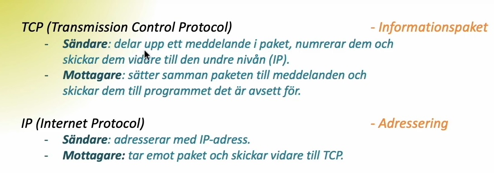

På denna webbsida besvaras frågor om tre delar imon webbteknik. Varje del har två frågor eller mer.
F1: Datakommunikation och Webbadresser
Vad avses med termerna klient och server?
En server gör det möjligt för olika datorer att kommunicera med varandra. Serverns roll är att invänta en
förfrågan från en klient och sedan bistå klienten med den information (kod/data) som efterfrågas. Klienten
är ofta exempelvis en webbläsare eller en e-postklient. Kommunikationen mellan en klient och server går till
på så sätt att klienten skickar en adresserad begäran för en viss tjänst, om den efterfrågade tjänsten
(informationen/koden/datan) finns på den aktuella servern återsänder servern detta och klienten tolkar sedan
koden. Ett bra exempel på detta är att skriva in en URL-adress i sin webbläsare. En förfrågan skickas då
till servern för den specifika adressen och om adressen stämmer skickar servern tillbaka en kod som
webbläsaren tolkar. En webbsida visas nu i webbläsaren.
Beskriv vad var och en av protokollen TCP och IP gör på sändande och mottagande sida.
TCP (Transmission Control Protocol) och IP (Internet Protocol) ansvarar för att skicka och motta så kallade
informationspaket. Ett informationspaket kan vara exempelvis en video eller en bild.
TCP och IP är båda delaktiga på den sändande sidan och den mottagande sidan.
På den sändande sidan ansvarar TCP för att dela upp det informationspaket som ska skickas i mindre
meddelande som sedan numreras så att mottagande TCP sedan ska kunna återskapa informationspaketet som det
skickades. När ett informationspaket är uppdelat skickas det vidare till IP som adresserar paketet till
mottagarens IP-adress.
På den mottagande sidan tar IP emot paketet och skickar det vidare till mottagande TCP som sorterar de
uppdelade meddelanden till den ordningen sändaren avsåg. Informationspaketet har nu hamnat hos mottagaren i
samma form som den skickades från sändaren. Se bild nedan.

Beskriv de delar som följande url består av: http://webbteknik.abc.se:8082/kurs1/uppg/u1.html#fragor
Protokoll: HTTP://
Detta är för att visa servern vilket protokoll som ska
användas vid aktuell förfrågan. HTTP betyder HyperText Transfer Protocol och är det vanligaste
protokollet när URL-adressen för en webbplats anges. Ett protokoll är ett regelverk för hur en kod
ska tolkas.
Domännamn: webbteknik.abc.se
Domännamn kan delas upp i toppdomäner och
underdomäner. I detta fallet är toppdomänen .se och .abc samt webbteknik är två så kallade
underdomäner. Domännamnet är en ersättning för den serverns IP-adress man begär kod från. Ett
specifikt domännamn är kopplat till en server med en egen IP-adress.
Port :8082
En port är ett sätt för klienter och servrar att kommunicera. I
aktuellt fall sker kommunikationen via port 8082. Enda sättet att få tillgång till den aktuella
webbadressen är via port 8082.
Sökväg: kurs1/uppg/u1.html
Detta refererar till sökvägen eller de mappar där den
aktuella filen/stycket som efterfrågas ligger. I aktuellt fallt ligger filen u1.html under mappen
uppg som i sin tur ligger i mappen kurs1.
Stycke: #fragor
Refererar till ett specifikt stycke på den aktuella
webbsidan. För att detta ska fungera måste det finnas ett ID som heter fragor i u1.html.